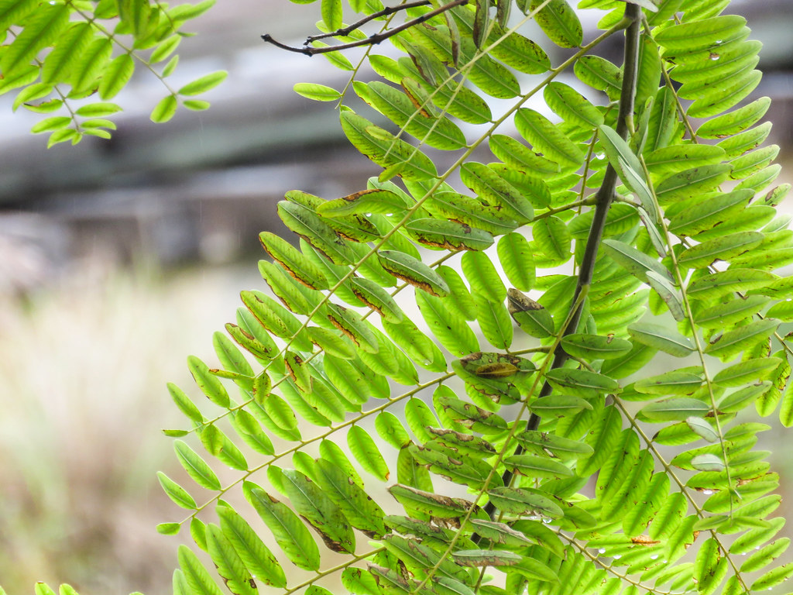

栃木県小山市、腸もみ内臓セラピーMana pono。お腹をやさしくほぐし、心とからだの巡りを整えるひとときをご提供します。

お腹まわりを中心に、内側から整えるケアに特化した専門知識でサポートします。
その日の体調やお悩みに合わせて、やさしく丁寧な施術をご提案します。
地域の皆様から高い評価をいただいています。安心して通い続けられるサロンを目指しています。
 Photo: イメージPhoto: イメージ
Photo: イメージPhoto: イメージ